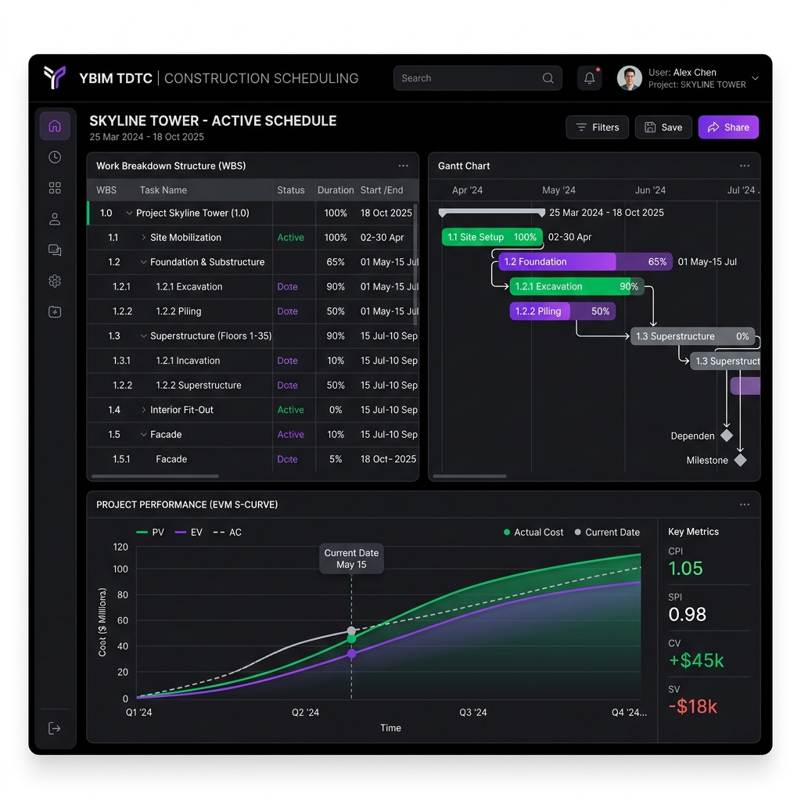

BIM 5D & Tối Ưu Tiến Độ Với Sức Mạnh Trí Tuệ Nhân Tạo
Phần mềm quản trị tiến độ thi công cao cấp thế hệ mới, tích hợp động cơ liên kết cấu kiện Speckle 3D, bóc tách tiên lượng tự động, san bằng tài nguyên bằng thuật toán Di truyền và nén tiến độ chi phí tối ưu (TCTO).

Các Phân Hệ Đột Phá Trên Bản Pro
YBIM TDTC cung cấp bộ công cụ mạnh mẽ và khép kín giải quyết bài toán phức tạp trong lập và tối ưu tiến độ xây dựng.
Đường Găng CPM & Baseline Kép
Tự động tính toán tiến độ theo phương pháp Sơ đồ mạng đường găng (CPM). Hỗ trợ chốt Baseline và vẽ đè Baseline mờ song song bên dưới tiến độ thực tế để đo kiểm sự chênh lệch tiến độ.
San Bằng Tài Nguyên Bằng AI (GA)
Thuật toán Di truyền (Genetic Algorithm) chạy đa luồng ngầm song song đề xuất 3 kịch bản: Ưu tiên tối ưu Peak máy thi công, Ưu tiên san bằng nhân công, và Trì hoãn dòng tiền nhàn rỗi.
Tích Hợp Speckle 3D BIM 5D QS
Kết nối trực tiếp mô hình 3D trên đám mây. Tự động bóc tách tiên lượng thể tích bê tông, diện tích ván khuôn từ API GraphQL và đồng bộ hóa chi phí (NormalCost) cùng liên kết hình học WBS.
Quản Trị Tài Chính EVM S-Curve
Vẽ biểu đồ tích lũy dòng tiền S-Curve cao cấp gồm PV, EV, AC. Tự động tính toán các chỉ số sức khỏe dự án (CPI, SPI, CV, SV) và đưa ra 3 kịch bản dự báo tổng mức chi phí khi hoàn thành (EAC) chuẩn PMI.
Nén Tiến Độ Tối Ưu Chi Phí (TCTO)
Giải thuật Greedy Crashing tự động nén tiến độ dự án bằng cách rút gọn thời gian các công tác trên đường găng có chi phí nén rẻ nhất, tối thiểu hóa chi phí phát sinh bổ sung cho chủ đầu tư.
Tương Tác Đa Hệ Sinh Thái
Đồng bộ 2 chiều thời gian thực với MS Project qua WebSocket. Nhập/Xuất Primavera P6 (.XER). Xuất mã LISP AutoCAD vẽ tiến độ tự động dàn Layout A3 in ấn chuẩn kỹ thuật.
🎮 Bộ Mô Phỏng CPM & Sơ Đồ Gantt SVG Trực Tuyến
Trải nghiệm trực quan thuật toán CPM (Critical Path Method) ngay trên trình duyệt. Thêm, sửa thời gian và mối quan hệ tiền nhiệm để xem hệ thống tự tính toán các ngày Khởi công Sớm/Muộn và phát hiện Đường Găng (màu đỏ)!
1. Nhập Công Tác
Danh Sách Công Tác Hiện Có
| ID | Tên | Ngày | Predecessors | Slack | Đường găng |
|---|
2. Biểu đồ Gantt Chart SVG & Đường Găng (CPM)
🏢 Trình Xem Thử Nghiệm Tương Tác 3D BIM QS
Nhập chọn vào cấu kiện BIM 3D bên dưới để xem hệ thống JS Bridge đồng bộ ngược thuộc tính GUID và tính toán thể tích tiên lượng QS tức thời sang danh sách tiến độ WBS bên phải!
Bảng thuộc tính BIM
Chưa có cấu kiện nào được chọn. Nhấp vào các khối 3D bên trái để kiểm tra thuộc tính hình học.
Hướng Dẫn Sử Dụng Trực Tuyến
Cẩm nang vận hành chi tiết tất cả các tính năng của YBIM TDTC Pro v0.2.0-01
1. Giới thiệu phần mềm YBIM TDTC Pro
YBIM TDTC (Yêu cầu BIM - Tiến Độ Thi Công) là phần mềm quản lý, mô phỏng và tối ưu hóa tiến độ thi công xây dựng tích hợp 3D BIM cao cấp chạy trực tiếp trên hệ điều hành Windows. Hệ thống được viết bằng C# .NET 8.0 WPF, tích hợp SkiaSharp cho hiệu năng vẽ vector Gantt mượt mà và nền tảng Speckle Cloud Platform.
Hệ điều hành Windows 10/11 x64, .NET Runtime 8.0 installed, màn hình độ phân giải tối thiểu 1366x768 (khuyên dùng Full HD 1920x1080 hoặc màn hình laptop 15.6 inch).
1.1. Cấu trúc Giao diện chính
Giao diện YBIM TDTC được thiết kế theo phong cách Fluent Design của Microsoft gồm dải ruy-băng Ribbon Menu trên cùng chia thành hai tab:
- Tab "Menu Task" (Tab 1): Hợp nhất toàn bộ các chức năng Tệp tin, Xuất/Nhập dữ liệu (MPP, Excel, P6, LISP, PDF, PPTX), Quản lý Baseline, Quản lý Tác vụ (Thêm, Xóa, Thụt dòng, Tiến tới, Liên kết) và các Checkbox bật tắt hiển thị đường găng, dự phòng.
- Tab "Định dạng & Bar Style" (Tab 2): Gom toàn bộ công cụ định dạng chữ và đổi kiểu dáng, màu sắc các thanh biểu đồ Gantt cùng màu chủ đề.
- Menu Tùy chọn (Backstage Options): Nơi cài đặt ngày nghỉ lễ, định dạng hiển thị ngày tháng, kích hoạt chế độ AutoSave và kiểm tra bản quyền.
Cẩm Nang Kỹ Thuật Lập Trình
Phân tích sâu giải thuật cốt lõi và các quy chuẩn lập trình WPF / SkiaSharp / GeneticAlgorithm của dự án
Giải thuật Di truyền & TCTO trong tối ưu hóa tiến độ
Phần mềm sử dụng mô hình mã hóa NST (Chromosome) tùy biến. Mỗi Gen đại diện cho Thời gian trễ (delay) của một công tác không găng.
Tối ưu hàm Fitness chạy hàng chục ngàn lần:
// Cẩm nang tối ưu Fitness cực kỳ chuyên sâu từ Work_Skill.md
public double Evaluate(IChromosome chromosome)
{
var representation = chromosome as FloatingPointChromosome;
var delays = representation.ToFloatingPoints();
// 1. Dùng Dictionary pre-computed thay vì IndexOf chạy O(N) trong vòng lặp
// 2. Sử dụng mảng tĩnh double[] thay vì List để tránh cấp phát bộ nhớ liên tục
double[] dailyAllocation = new double[totalProjectDays + 200]; // Thêm đệm an toàn
for(int i = 0; i < taskCount; i++) {
int actualStart = baseStarts[i] + (int)delays[i];
// Tính toán phân bổ tài nguyên...
}
// Tính toán độ biến thiên (Variance) của biểu đồ tài nguyên
double variance = CalculateVariance(dailyAllocation);
return 1.0 / (variance + 0.001); // Tránh chia cho không
}
Giải thuật Greedy Crashing (TCTO):
Được thực thi đệ quy. Thuật toán tìm tập hợp các công tác trên đường găng (Critical Path). Lọc ra các công tác có khả năng nén Duration > CrashDuration, sau đó tìm công tác có CrashCost nhỏ nhất và nén xuống 1 ngày. Chạy lại CPM để cập nhật đường găng mới và lặp lại cho đến khi đạt mục tiêu hoặc không thể nén thêm.
Tích Hợp Hệ Sinh Thái GitHub
Hướng dẫn kích hoạt GitHub Pages, GitHub Wiki, và GitHub Discussions cho kho lưu trữ dự án `YBIM-sketch/YBIM_TDTC` của bạn
1. Kích hoạt GitHub Pages (Cổng thông tin trực tuyến)
Trang web mà bạn đang xem hiện tại chính là giao diện hoàn hảo được thiết kế cho **GitHub Pages**. Để xuất bản trang web này lên internet phục vụ khách hàng và cộng đồng, hãy làm theo các bước sau:
- Đẩy toàn bộ thư mục
docshiện tại của dự án lên nhánh chính (ví dụ:main) của kho lưu trữ GitHub của bạn. - Truy cập vào kho lưu trữ của bạn trên GitHub: github.com/YBIM-sketch/YBIM_TDTC.
- Nhấp vào tab Settings ở góc trên bên phải thanh công cụ.
- Ở thanh menu bên trái, nhấp vào mục Pages (nằm trong phần Code and automation).
- Tại phần Build and deployment, mục Source chọn Deploy from a branch.
- Mục Branch, chọn nhánh của bạn (ví dụ:
mainhoặcmaster) và chọn thư mục /docs thay vì / (root). - Nhấp nút Save. Sau 1-2 phút, GitHub sẽ tự động biên dịch và cung cấp đường link website chính thức của bạn dạng:
https://ybim-sketch.github.io/YBIM_TDTC/!
2. Thiết lập GitHub Wiki (Tài liệu kỹ thuật chuyên nghiệp)
GitHub Wiki là một kho lưu trữ Git thứ hai đi kèm dự án của bạn (đường dẫn dạng .wiki.git). Để thiết lập tài liệu hướng dẫn sử dụng và cẩm nang kỹ thuật cực kỳ đẹp mắt lên GitHub Wiki:
- Truy cập tab Wiki của kho lưu trữ trên web GitHub.
- Nhấp vào nút Create the first page. Viết tiêu đề trang đầu tiên là
Home, sau đó nhấn Save Page. Việc này sẽ khởi tạo kho lưu trữ Wiki. - Bây giờ bạn có thể clone kho lưu trữ Wiki về máy tính để thêm hàng loạt tài liệu bằng dòng lệnh:
# Clone kho lưu trữ Wiki của bạn về máy git clone https://github.com/YBIM-sketch/YBIM_TDTC.wiki.git # Sao chép các tệp hướng dẫn sử dụng và kỹ thuật vào thư mục Wiki mới clone # Huong_Dan_Su_Dung_YBIM_TDTC.md -> đặt tên thành Huong-Dan-Su-Dung.md # Work_Skill.md -> đặt tên thành Cam-Nang-Ky-Thuat.md # Đẩy tài liệu lên GitHub Wiki git add . git commit -m "Add YBIM TDTC v0.2.0-01 comprehensive documentation" git push origin master
3. Kích hoạt GitHub Discussions (Cộng đồng thảo luận & Zalo Support)
Discussions là nơi hoàn hảo để người dùng báo lỗi, đề xuất tính năng (Feature Request) hoặc hỏi đáp về cách kết nối AutoCAD/Excel song ngữ.
- Truy cập vào Settings của kho lưu trữ trên web GitHub.
- Tại tab General, cuộn xuống phần Features.
- Tích chọn vào ô Discussions. GitHub sẽ tự động tạo một tab Discussions mới trên thanh công cụ chính của kho lưu trữ.
- Nhấp vào tab Discussions vừa được tạo, chọn **Set up discussions**.
- Bạn nên tạo các danh mục thảo luận chuẩn hóa sau để hướng dẫn người dùng chuyên nghiệp:
- 📢 Announcements (Thông báo): Để giới thiệu các bản cập nhật phiên bản mới như v0.2.0-01.
- 💡 Ideas (Đề xuất ý tưởng): Nơi người dùng đóng góp các ý kiến cải tiến thuật toán AI / Speckle 3D.
- 💬 Q&A (Hỏi & Đáp): Nơi giải đáp các vướng mắc về bản quyền, lỗi nạp LISP AutoCAD.
- 🐛 Bug Reports (Báo lỗi): Nơi kỹ sư chụp ảnh màn hình phản hồi các lỗi crash phần mềm.